Colosseo"Coliseu"
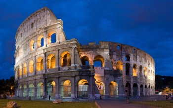Roma, a capital da Itália, é uma cidade cosmopolita, enorme, com quase 3.000 anos de arte, arquitetura e cultura influentes no mundo todo e à mostra. Ruínas antigas como o Fórum e o Coliseu evocam o poder do antigo Império Romano.
Grande Canal de Venza"Canal Grande di Venezia"
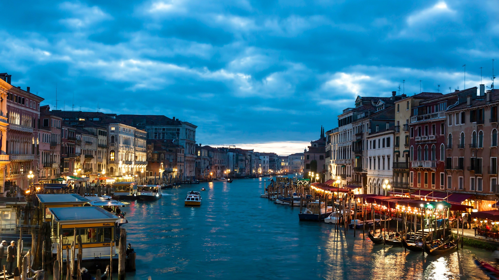Veneza, a capital da região de Vêneto, no norte da Itália, é formada por mais de 100 pequenas ilhas em uma lagoa no Mar Adriático. A cidade não tem estradas, apenas canais (como a via Grand Canal), repletos de palácios góticos e renascentistas.
As duas Torres dos Asinelli"Le Due Torri degli Asinelli"
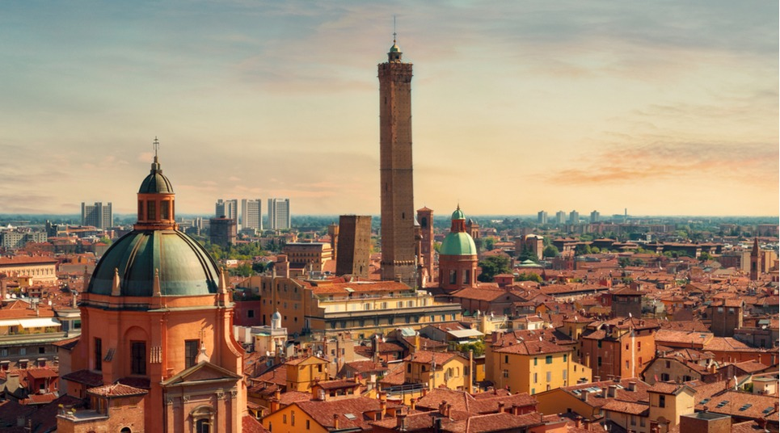Bolonha é a animada capital histórica da região de Emília-Romanha, no norte da Itália. A Piazza Maggiore é uma imensa praça cercada por colunatas em arco, cafés e estruturas medievais e renascentistas, como a antiga prefeitura, a Fonte de Netuno e a Basílica de São Petrônio. Dentre as muitas torres medievais da cidade estão as Duas Torres e as torres inclinadas de Asinelli e Garisenda.
Museu do Louvre"le musée du Louvre"
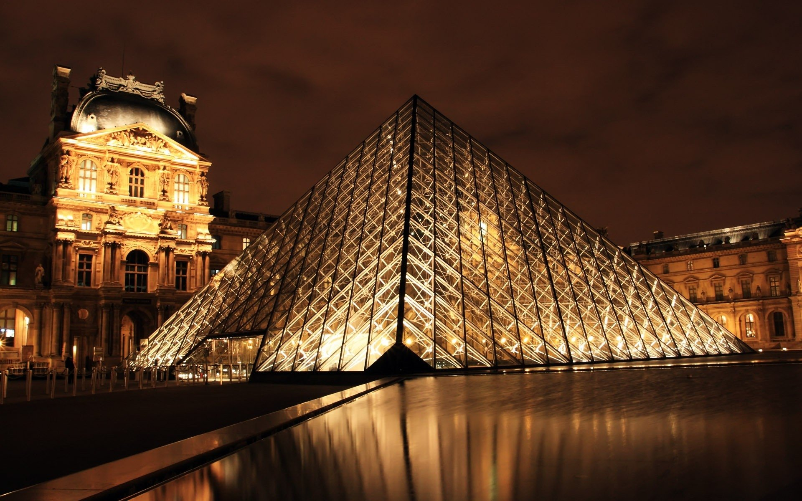Paris, a capital da França, é uma importante cidade europeia e um centro mundial de arte, moda, gastronomia e cultura. Sua paisagem urbana do século XIX é cortada por avenidas largas e pelo rio Sena. A cidade é conhecida por monumentos como a Torre Eiffel, a Catedral de Notre-Dame e o Museu do Louvre, sendo famosa também pela cultura dos cafés.
Velho Porto"Vieux Port"
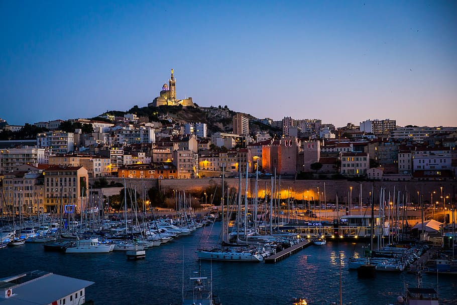Marselha, cidade portuária no sul da França, é um importante centro de imigração e comércio desde que foi fundada pelos gregos por volta de 600 a.C. No seu coração está o Vieux-Port (Porto Velho), onde pescadores vendem peixes ao longo do cais repleto de barcos. A Basílica de Notre-Dame-de-la-Garde é uma igreja de estilo românico-bizantino. Entre os monumentos como o Palácio Longchamp
Palácio de Versalhes"château de Versailles"
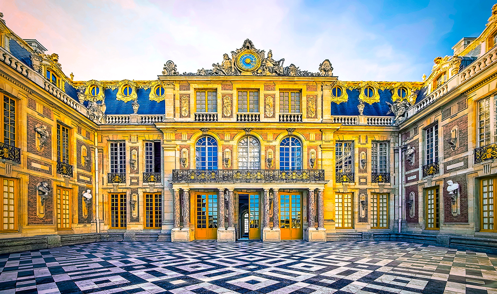Versalhes é uma cidade no departamento de Yvelines, região da Ilha de França. Cidade artificial, criada a partir do zero por vontade do rei Luís XIV, Versalhes foi a sede do poder político durante um século, entre 1682 e 1789, antes de se tornar o berço da Revolução.
Machu Picchu"Montanha Velha"
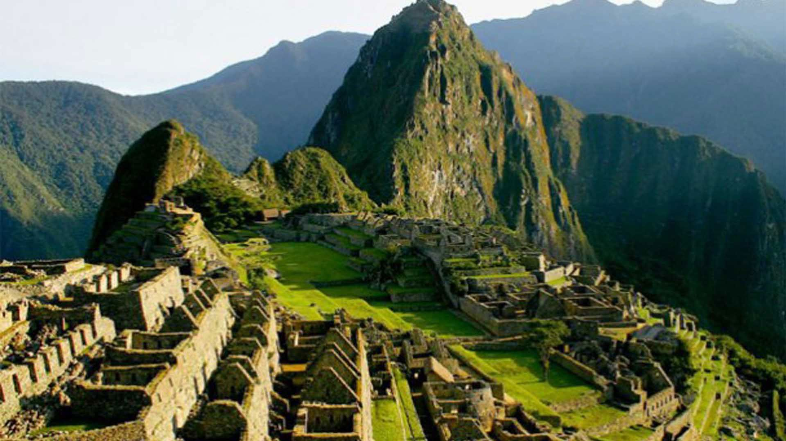Machu Picchu é uma cidadela inca que fica no alto da Cordilheira dos Andes no Peru, acima do vale do rio Urubamba. Construída no século XV e posteriormente abandonada, ela é conhecida pelas sofisticadas muralhas de pedra contínuas, cujos imensos blocos foram unidos sem o uso de argamassa, pelas construções intrigantes que levam em conta o alinhamento dos astros e pelas vistas panorâmicas. A antiga utilidade dessas construções segue sendo um mistério.
Praça Maior "Plaza Mayor"

Lima, capital do Peru, está situada na árida costa do Pacífico do país. Apesar de ter seu centro colonial preservado, a cidade é uma metrópole movimentada e uma das maiores cidades da América do Sul. Nela, está localizada a coleção de arte pré-colombiana do Museu Larco e do Museo de la Nación, que traça a história das civilizações antigas do Peru. A Plaza de Armas e a catedral do século XVI são o coração do centro histórico de Lima.
Igreja da Companhia de Jesus"Iglesia De La Compania De Jesusr"
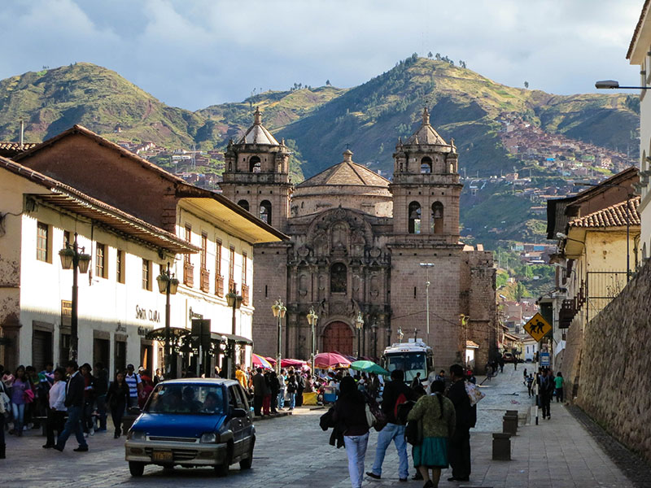Cusco, uma cidade situada nos Andes peruanos, já foi capital do Império Inca e agora é conhecida por seus vestígios arqueológicos e sua arquitetura colonial espanhola. A Plaza de Armas é a praça central da cidade antiga, com arcadas, varandas esculpidas de madeira e ruínas de muralhas incas.
Necrópolde de Gizé"مقبرة الجيزة"
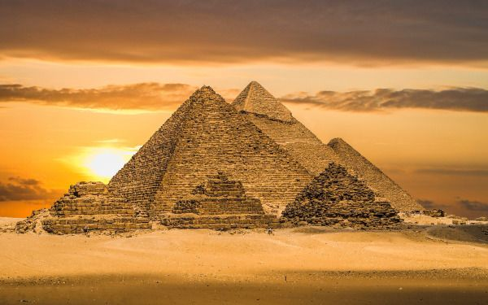Cairo, a grande capital do Egito, está localizada às margens do rio Nilo. Em seu centro, ficam a Praça Tahrir e o amplo Museu Egípcio, que exibe uma coleção de antiguidades, como múmias reais e artefatos dourados do Rei Tutancâmon. Perto dali fica Gizé, local das famosas pirâmides e da Grande Esfinge, que data do século XXVI a.C. Na área arborizada de Zamalek, na ilha de Gezira, a Torre do Cairo, com 187 m de altura, proporciona vistas panorâmicas da cidade.
Alexandria Eskendereyya"اسكندريه اسكندريه"
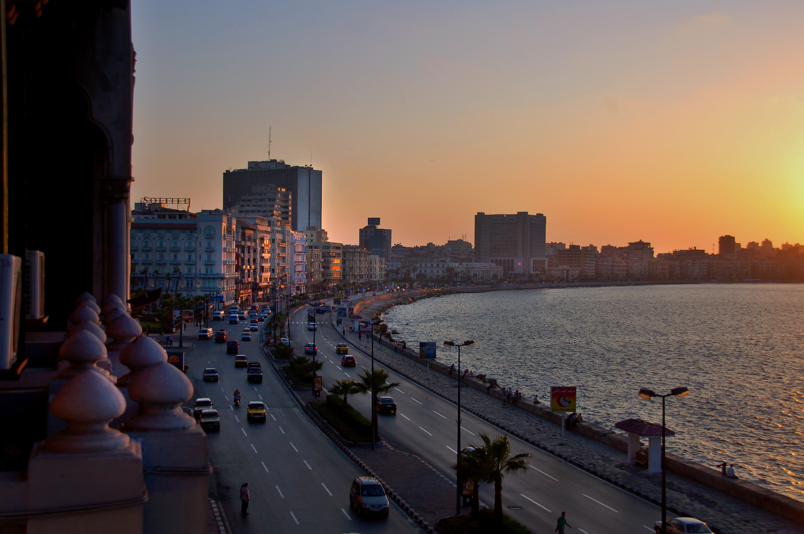Alexandria é uma cidade portuária do Mediterrâneo, no Egito. Durante o período helenístico, abrigou um farol que é considerado uma das Sete Maravilhas do Mundo Antigo, além de uma famosa biblioteca, reencarnada na ultramoderna Bibliotheca Alexandrina, em forma de disco. A cidade também tem marcos greco-romanos, cafés do velho mundo e praias arenosas. Construída na orla marítima no século XV, a Fortaleza de Qaitbay é hoje um museu.
Resort de Sharm el-Sheikh "منتجع شرم الشيخ"
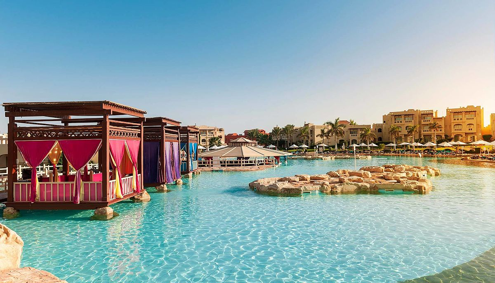Sharm el-Sheikh é uma cidade turística egípcia entre o deserto da península do Sinai e o mar Vermelho. É conhecida por suas praias abrigadas, águas cristalinas e recifes de corais. A baía de Naama, com um calçadão repleto de palmeiras, tem vários bares e restaurantes. O Parque Nacional Ras Muhammad é um destino procurado para quem gosta de mergulho, com vida marinha próxima aos recifes Shark e Yolanda e ao navio naufragado Thistlegorm.
Templo de Hefesto"ναός του Ηφαίστου"
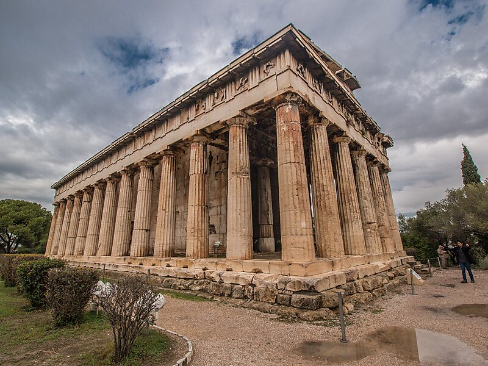Atenas é a capital da Grécia. A cidade também foi o centro da Grécia Antiga, um império e civilização poderosos, e ainda é dominada por monumentos do século V a.C., como a Acrópole, uma cidadela no topo de uma montanha repleta de construções antigas, como o templo Partenon e suas muitas colunas. O Museu da Acrópole, juntamente com o Museu Arqueológico Nacional, preserva as esculturas, os vasos, as joias e outras relíquias da Grécia Antiga.
Castelo Bourtzi"Κάστρο Μπούρτζι"
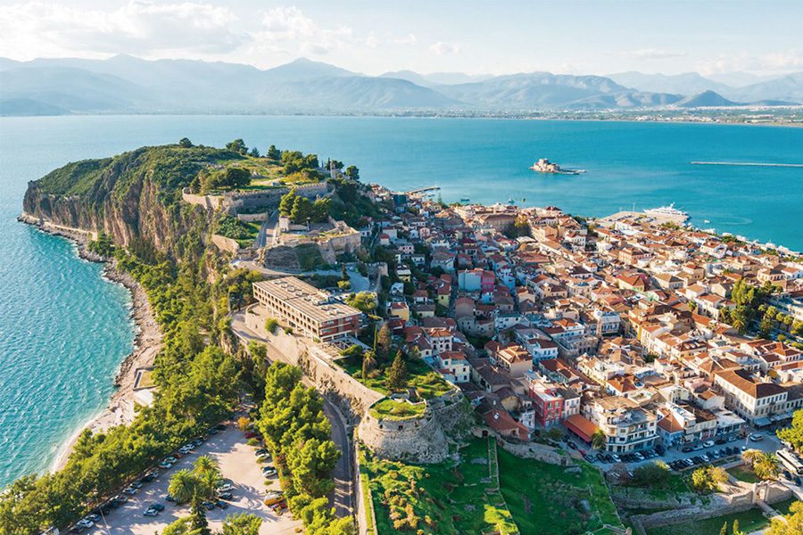O Peloponeso é uma extensa península montanhosa no sul da Grécia, com 21 439 quilômetros quadrados, unida ao continente pelo istmo de Corinto. Seu nome deriva de Pelopos Nisos, mas na obra de Homero é chamada genericamente de Argos, uma cidade da região.
Ilha no Mar Egeu"Νησί στο Αιγαίο Πέλαγος"
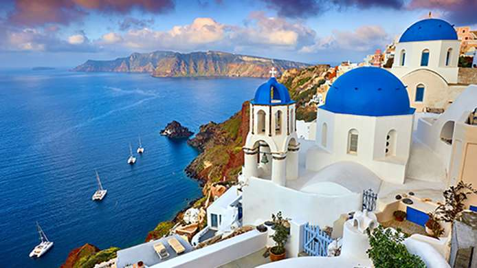Santorini é uma das ilhas Cíclades no Mar Ageu. Ela foi devastada por uma erupção vulcânica no século 16 A.C., moldando para sempre sua paisagem ondulada. As casas brancas, em forma de cubo, das 2 principais cidades, Fira e Oia, ficam nas encostas acima da caldeira (cratera) submersa. Elas avistam o mar, as ilhas menores a oeste e as praias, constituídas de seixos de lava pretos, vermelhos e brancos.